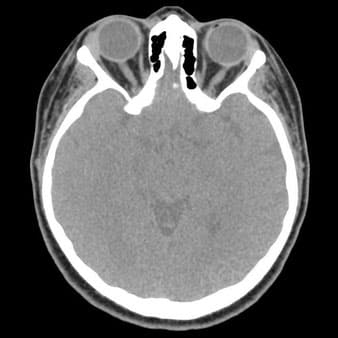

Наші послуги
-

КТ голови
Сканування головного мозку, черепа і оточуючих їх тканин, дослідження навколоносових пазух, що дозволяє виявляти різні патології мозку або ЛОР-органів. Діагностичне дослідження для оцінки стану кісток лицьового відділу черепа та ін.
-

КТ м'яких тканин
КТ м’яких тканин однієї області – Дослідження, призначене для оцінки стану м’яких структур і розмірів патологічних утворень.
-
КТ внутрішніх органів
Дослідження, що дозволяє отримати дані про стан органів грудної клітки та середостіння. Метод оцінки стану сечовидільної системи за допомогою комп’ютерної томографії. Дослідження, що дає інформацію про стан органів черевної порожнини і малого таза, а також тих, що оточують їх тканин.
-

КТ хребта
Дослідження стану шийного відділу хребта і діагностувати патологічні зміни; для діагностики патологій грудного відділу хребта; дослідження, призначене для оцінки структури хребта, що дозволяє виявити патологічні утворення і ін.
-

КТ суглобів і кісток
Сканування кісток і навколишніх тканин плечового пояса для виявлення патологій. Дослідження ліктьового суглоба і всіх його структур для діагностики захворювань і виявлення наслідків травм. Пошарове дослідження тканин тазостегнового суглоба для діагностики патологічних змін в його структурі.
-
Додаткові послуги
Опис КТ-зображення, наданого пацієнтом. Друк КТ-зображення на плівці. Дублікат знімка. Запис результатів дослідження на компакт-диск.